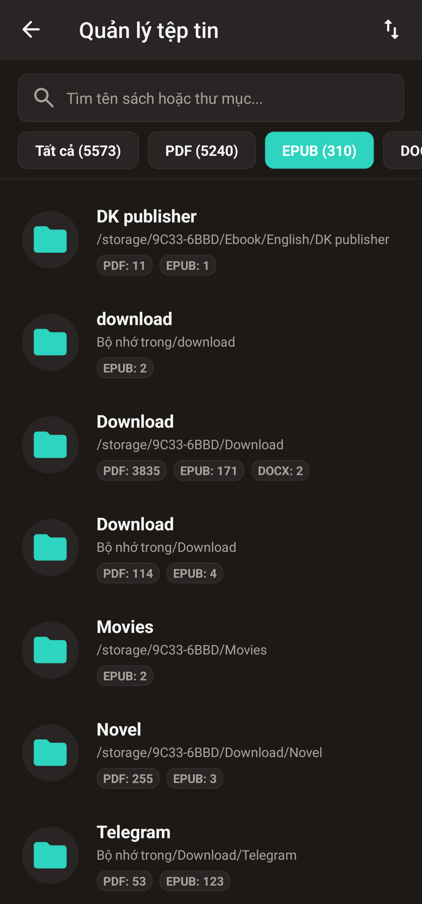
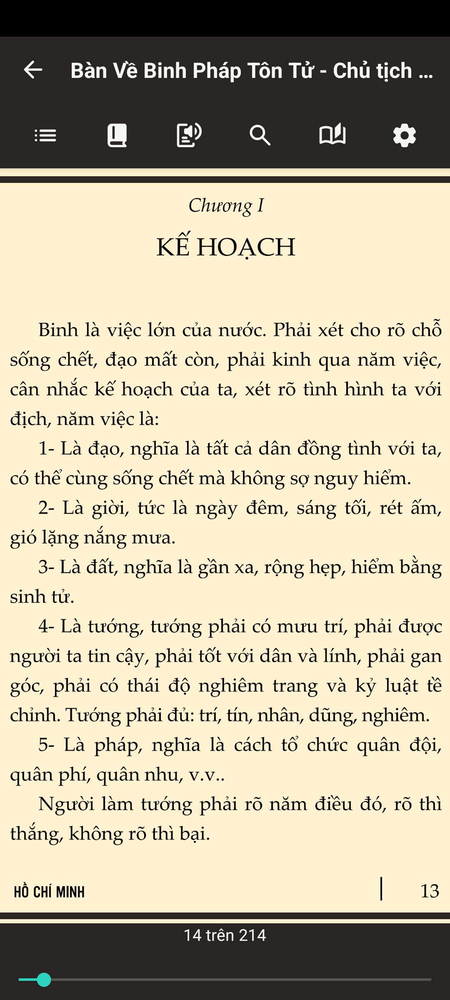
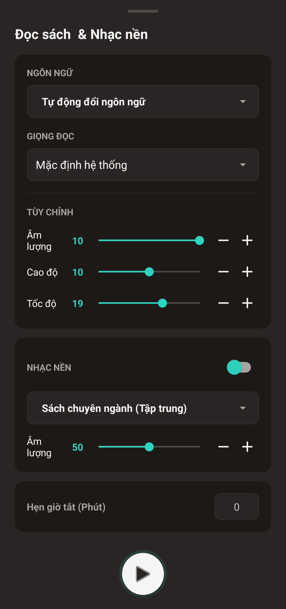
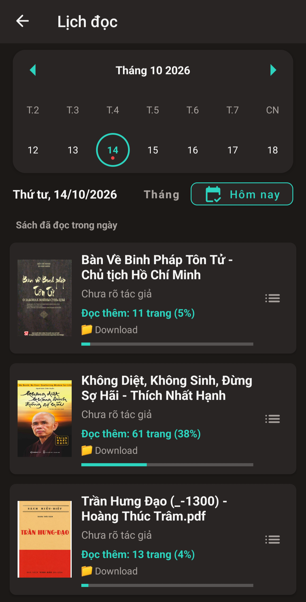
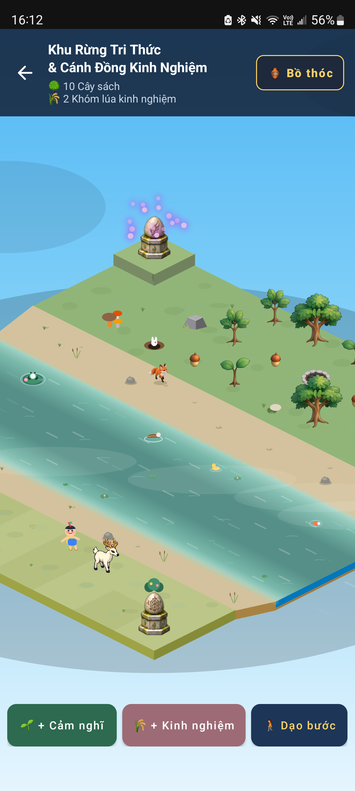

Đọc ebook đa định dạng (PDF, EPUB, DOCX) với giọng đọc TTS, nhạc nền tập trung, sao lưu Google Drive và Khu Rừng Tri Thức 2.5D độc đáo.
shop Tải trên Google Play
Tự động quét và gom mọi tệp PDF, EPUB, DOCX về một nơi. Mở sách tức thì, không mất thời gian tìm kiếm.

Tự động cắt viền lề trắng (Auto-crop) giúp nội dung luôn to rõ, xóa bỏ hoàn toàn bất tiện khi đọc PDF trên màn hình nhỏ.

Đẩy lùi tạp âm với nhạc nền tập trung chuyên biệt song hành cùng công nghệ đọc sách bằng giọng nói tự nhiên.

Ghi nhận số trang đọc mỗi ngày trên nhật ký trực quan, giúp bạn duy trì thói quen đọc sách bền bỉ.

Mỗi trang sách hoàn thành sẽ tích lũy kinh nghiệm nuôi dưỡng ốc đảo 2.5D, biến việc đọc thành trải nghiệm hào hứng.
Không gian đọc tập trung sâu, đọc mượt mà và biến trang sách thành tri thức lâu dài.
shop Tải trên Google Play